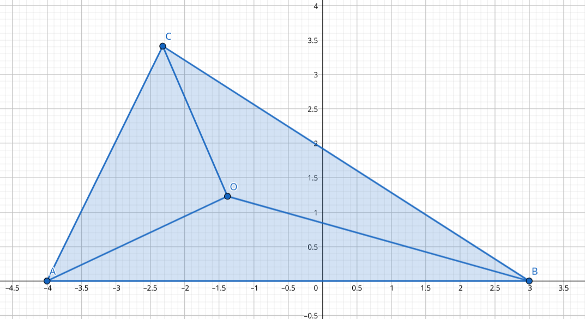
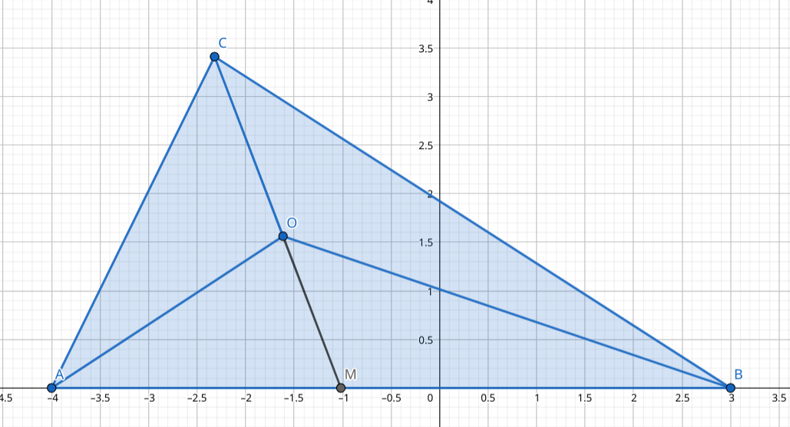
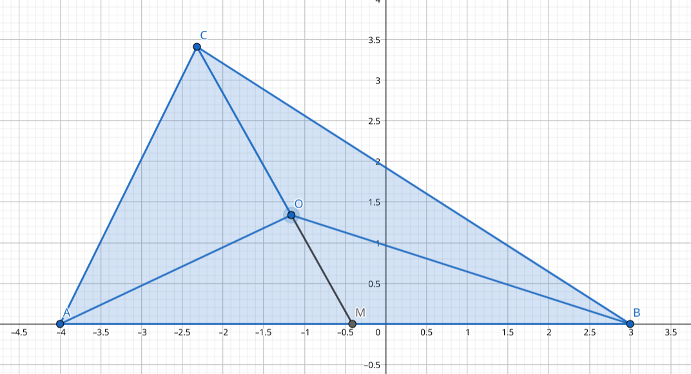
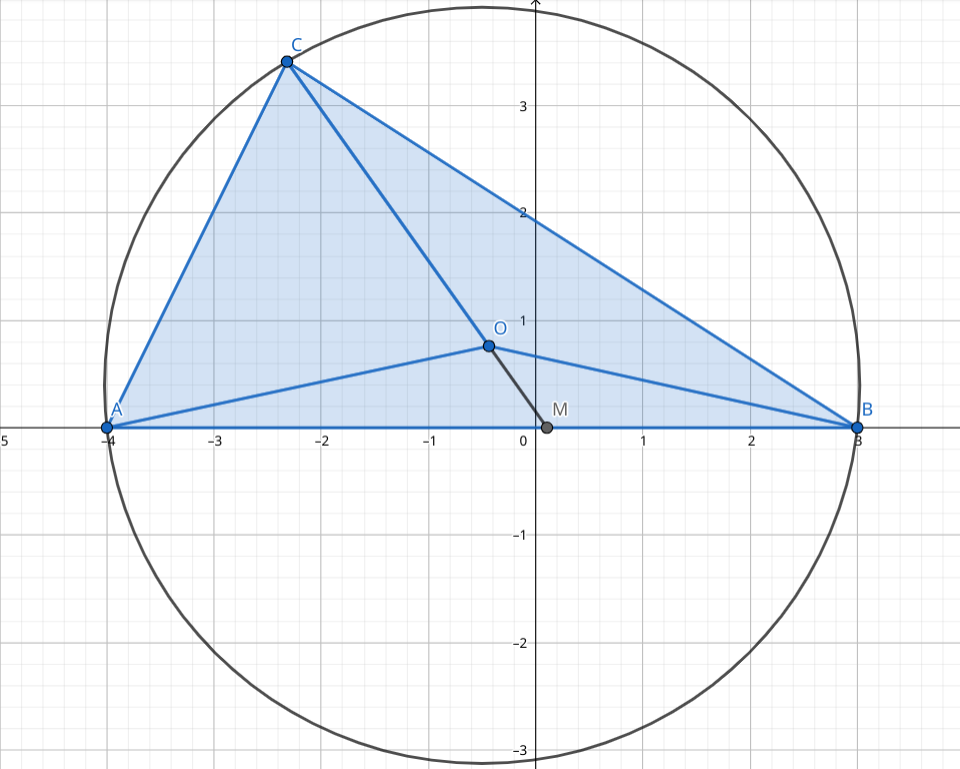
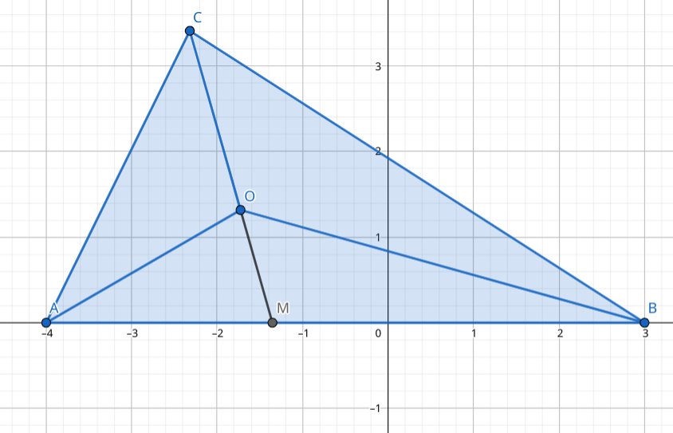
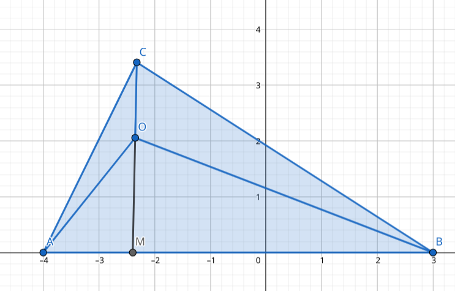

奔驰定理
事实上，奔驰定理和重心坐标有一定的关系。可以阅读奔驰定理与重心坐标一文以详细了解。#TODO#
奔驰定理： 记点 所对的小三角形面积为 ，则可写作：
证明

延长 交 于点 ，记大三角形面积为
容易表示出：，
整理得到
考虑到 ，，
则 同理有
三角心五心向量性质
利用奔驰定理，可以将向量与三角形结合起来。
重心

重心时，由 ，有
的证明，只需证明 ，，，，代入解得 ，证毕。 思路：基底法，连续运用中线性质和共线设比例来表示 与 ，然后用这两个向量表示基底向量，反解出比例。
外心

考虑到圆周角与圆心角的关系，有：
根据三角形面积公式，，则可以得到：
如果已知 的比例，则可以反解出对应的角度。
则有
考虑到 ，还可以写成另一个形式：
内心

对于内心，由于 ，而 相等，因此
则有： 由正弦定理有
垂心

垂心有一个性质： 利用投影的概念很容易理解。
证明以后补上。#TODO#
需要注意，当 在三角形外是不符合的。需要将面积重新定义才能得到正确的结果。（似乎是用叉乘之类的？）
背诵内容
奔驰定理？
奔驰定理的证明？ 利用定比分点表示 用面积比来代替边之比。
重心的向量性质？ ，即 为任意中线的三等分点靠近边的那个点。
外心的向量性质？ 圆心角面积公式，结合奔驰定理得到。
已知外心连接出的三个小三角形面积比例，求任意三角形中的角？
已知 ，求 ？ 结合奔驰定理。 构造外接圆圆心，则
内心的向量性质？
垂心的向量性质？ 邻边向量积相等： 奔驰定理：
例题
三角形二倍角正弦比求角度
在 中，已知 ，求 、 与
考虑到
同理解得 ，
比较套路化的做法，如果知道结论其实不难做。
还有一个比较有技巧性的方法。
，其余几个同理。
则 同时除以 得到：
不妨设 ，则 ，，则 ，则 ，，
接下来，，则 ，，，从而解得 ，，
配凑比较需要灵性。